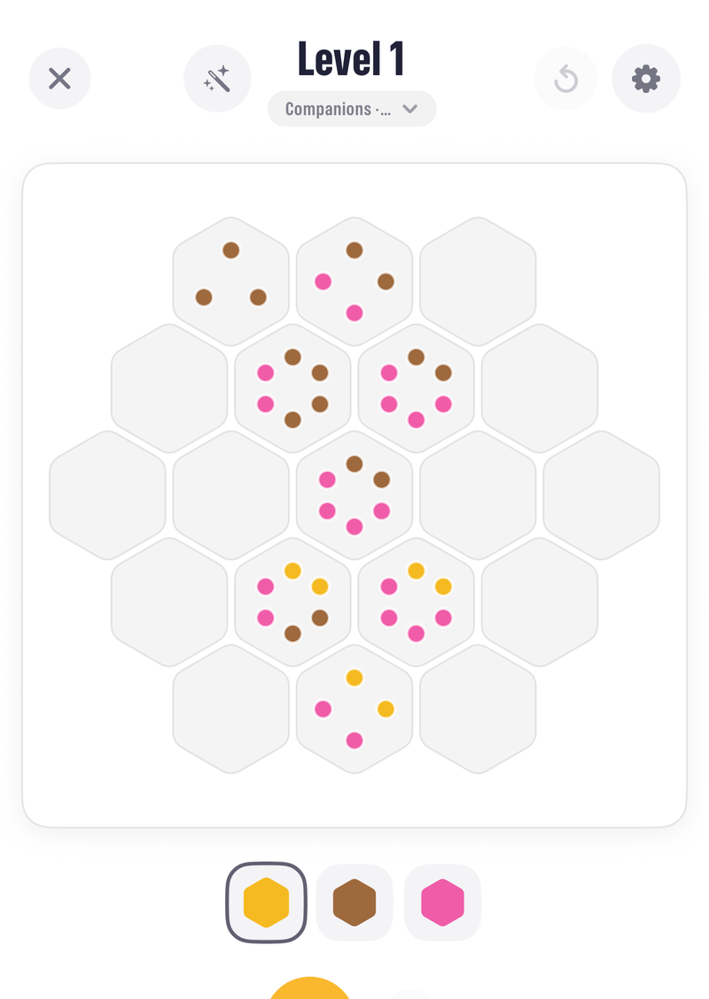
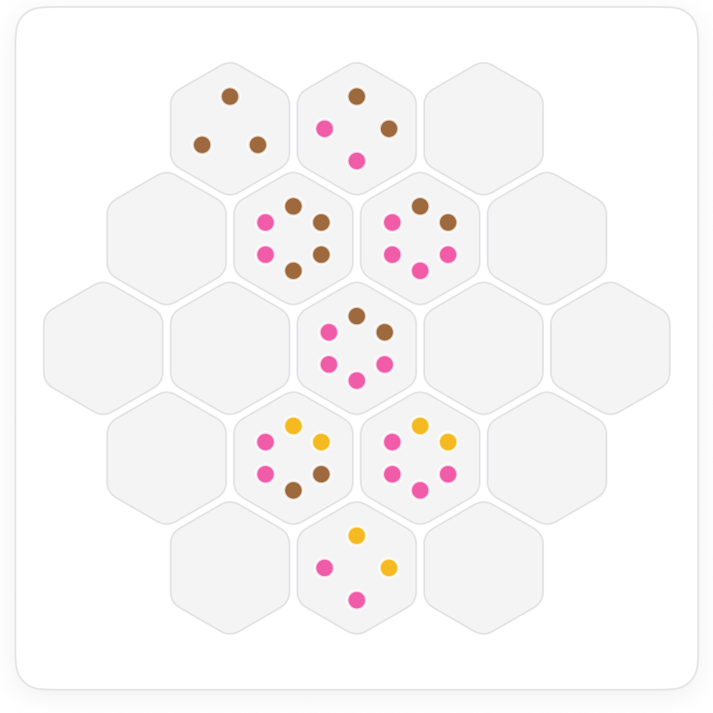
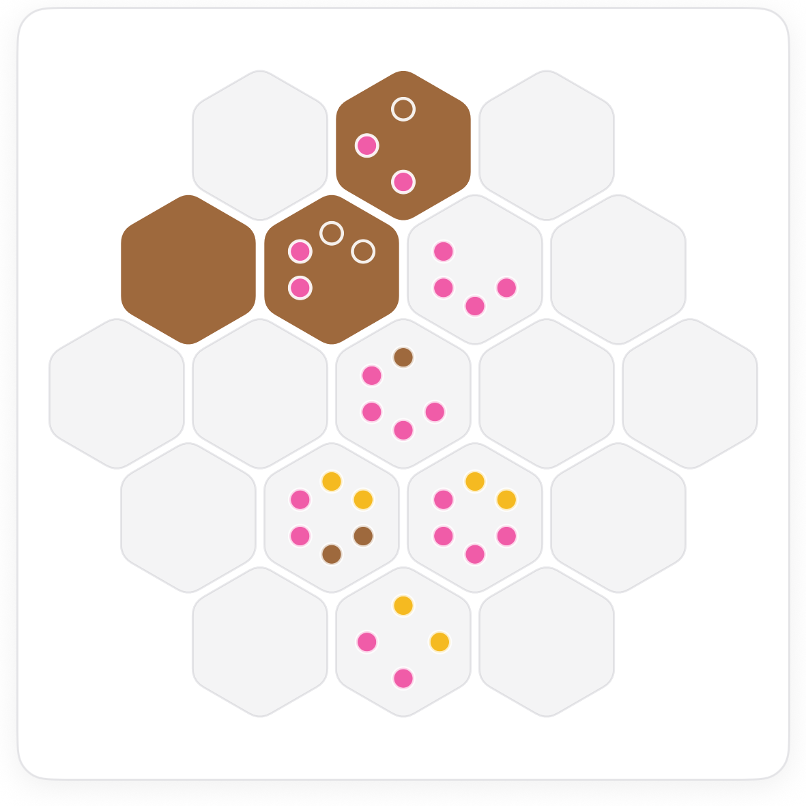
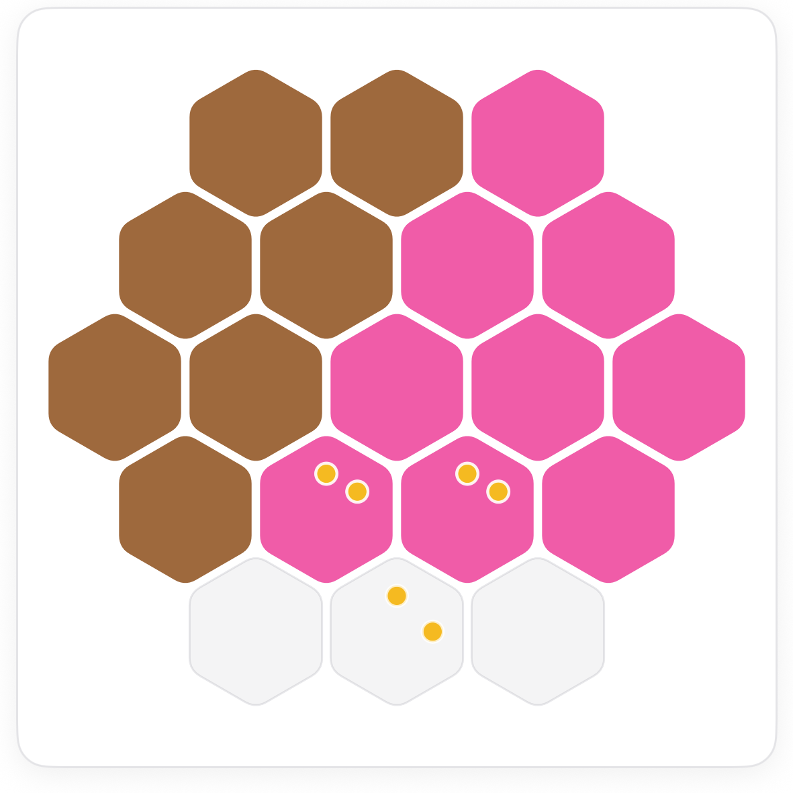

How to play Companions Seeds.
Companions is Seeds with one more rule: no gem stands alone. Every tile must touch at least one tile of its own colour. Fewer tiles carry seeds, and the companion rule is the clue that fills the gap.
The board.
The same honeycomb, three colours, and seeds on eight tiles instead of ten. Every tile starts empty.

The rules.
The second rule cuts both ways. A colour with a single tile in a region is impossible, and a tile with one empty neighbour left must be the colour that keeps it company.
Seeds first, as always.
Read the tiles whose seeds are all one colour and colour their neighbours. That builds the first block of gems.


Then let companions decide.
As the board fills, check every colour's tiles for company. A gem whose neighbours are all placed in other colours is stranded, so one of its empty neighbours must match it.

Every finished Companions board has every colour in connected groups of two or more. If you ever see a single gem with no matching neighbour, something nearby is wrong.
Common questions.
Does touching at a corner count?
On a honeycomb every neighbour shares an edge, so touching is touching. Six neighbours per tile.
Can a colour appear only once?
No. A colour that appears at all appears at least twice, and those tiles touch.